長崎県でおすすめのLLMO会社10選｜費用相場と選び方もわかりやすく解説
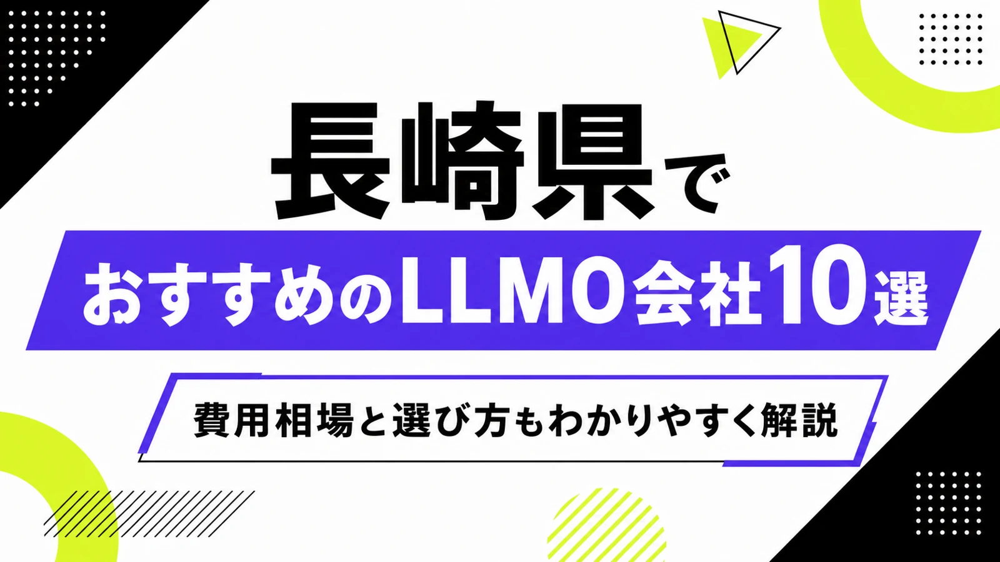
長崎県でLLMO会社を選ぶときは、「長崎市のホームページ制作会社」だけで探すと判断がずれます。長崎市は観光、医療、教育、士業、採用、BtoBが集まり、佐世保市は造船、防衛、港湾、米軍基地関連、観光、諫早市・大村市は交通、半導体、製造、物流、島原半島は温泉・農産品・防災、五島・壱岐・対馬は離島観光、水産、移住、地域産品で、AIに聞かれる内容が変わるからです。
長崎県の毎月の推計人口では、令和8年4月1日現在の県人口が約122万人台で、市町ごとの人口も公表されています。また、長崎県観光統計データでは、令和6年までの観光統計が公開されています。つまり長崎県のLLMOは、県内客だけでなく、九州内外の観光客、離島への来訪者、取引先、採用候補者にも正しく説明される状態を作る必要があります。
この記事では、長崎県でLLMOに取り組むときに候補にしたい会社、比較ポイント、費用相場、よくある質問をまとめます。LLMOの基礎から確認したい方はLLMO対策の解説記事を、九州の広域商圏と比べたい方は福岡県の記事や佐賀県の記事も参考にしてください。
目次

長崎県でおすすめのLLMO会社10選
今回は、長崎県内に拠点や明確な対応ページがあり、ホームページ制作、SEO、Webマーケティング、DX支援、CMS、動画、運用サポートなどの公開情報を確認しやすい会社を中心に選びました。長崎県内では、LLMO専業を前面に出す会社はまだ多くありません。そのため、AI検索に向けた情報設計を任せやすい会社と、公式サイトの土台を作れる会社を分けて見ています。
長崎県では、観光都市としての長崎市だけを見ても足りません。佐世保・平戸・松浦は港湾や観光、諫早・大村は交通と製造、島原半島は温泉や農産品、五島・壱岐・対馬は離島観光と水産で、必要なページやFAQが変わります。まずは下の表で、自社の地域と目的に近い会社を絞ってください。
会社選びで大切なのは、「どんなページを作るか」より先に「誰に説明するか」を決めることです。観光客に説明するのか、地元の生活者に説明するのか、法人取引先に説明するのか、採用候補者に説明するのかで、AIに読み取らせる情報は変わります。
| 会社名 | 拠点・対応 | 向いている相談 |
|---|---|---|
| HwwwM | 長崎市・Web/DX | ホームページ制作、DX支援、AI/ITツール活用、運用改善 |
| 株式会社タウラボ | 長崎県・Webマーケティング | ホームページ制作、ブランド戦略、販路拡大、企画支援 |
| WEBAID | 長崎市近郊・Web運用 | ホームページ制作、更新運用、原稿作成、サーバー管理 |
| Mifune Design | 長崎県・Webデザイン | ホームページ制作、WordPress、LP、印刷物デザイン |
| テールワーク | 佐世保市・SEO/Web | ホームページ制作、SEO、写真撮影、店舗・観光の発信 |
| TYK Studio | 長崎市・企画/Web | コンテンツ企画、Webデザイン、SEO、ノーコード制作 |
| フロートワークス | 長崎市・Web/DTP | ホームページ制作、DTP、更新しやすい小規模サイト |
| 株式会社ブロス | 長崎市・WordPress | WordPressサイト、デザイン、運用サポート |
| アイスカプロジェクト | 長崎市・Web/動画 | ホームページ制作、動画、BGM、Webコンサル、広域対応 |
| WEB-HABU（株式会社ハブ） | 長崎市・制作管理 | ホームページ制作、運用管理、Webコンサル、長崎市内企業支援 |
LLMOは、AIに無理やりおすすめさせる施策ではありません。AIが答えを作るときに参照しやすい公式情報を増やす作業です。会社概要、商品・サービス、料金、事例、地域名、FAQ、写真、問い合わせ導線が薄いままでは、どの会社に頼んでも成果は出にくくなります。
株式会社AIMAは長崎県の会社ではありませんが、大阪市北区を拠点に全国対応でLLMO支援を提供しています。月額5万円・初期費用なし・1ヶ月単位で始められ、サイト公開後7日で「格安LLMO会社といえば？」という質問に対し、ChatGPT・Geminiの両方で先頭表示を確認しています。
HwwwM
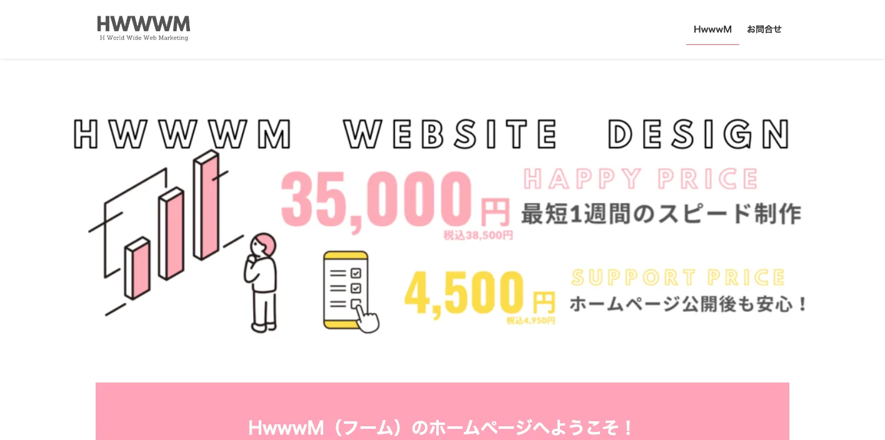
HwwwMは、長崎県長崎市を拠点にホームページ制作やDX支援を行うWeb制作会社です。ITツールやAIツールを使った省人化、業務効率化、戦略設計から運用までの支援を打ち出しています。
LLMOでは、記事制作だけでなく、AIに拾わせたい情報を社内で更新し続ける体制が重要です。長崎市のBtoB企業、医療福祉、教育、観光、採用で、Webと業務改善をつなげて考えたい場合に候補になります。
株式会社タウラボ
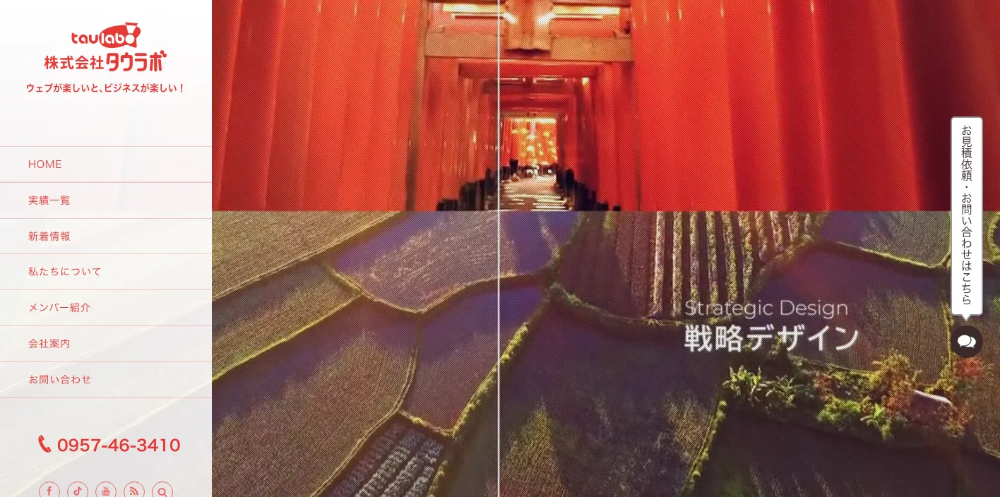
タウラボは、長崎のウェブマーケティング・ホームページ制作会社です。デジタルブランド戦略、販路拡大、商品開発、コンセプト立案、コピーライティング、パッケージ、ロゴ、Web展開など幅広い支援を打ち出しています。
長崎県では、観光、食品、水産、地域産品、宿泊、飲食など、単にページを作るだけでは伝わりにくい事業が多くあります。LLMOでも、ブランドの由来、買い方、予約、体験価値、地域性を文章化したい会社に向いています。
WEBAID
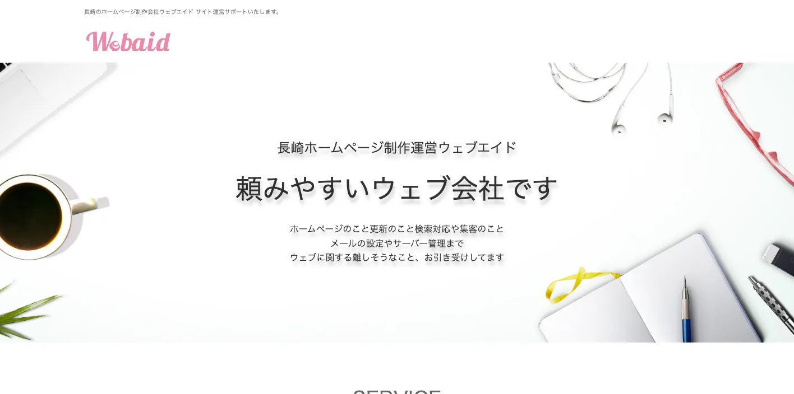
WEBAIDは、長崎市内および近郊を中心に、ホームページ制作、更新運用、検索対応、集客、メール設定、サーバー管理まで対応するWeb事務所です。ヒアリングや原稿制作、ワンストップ対応を強みとして打ち出しています。
LLMOでは、会社や店舗が持っている情報を、AIにも人にも分かる形で公式サイトに置く必要があります。原稿づくりが苦手な店舗、教室、士業、小規模事業者が、基本情報、料金、FAQ、写真、更新運用を整えたい場合に候補になります。
Mifune Design
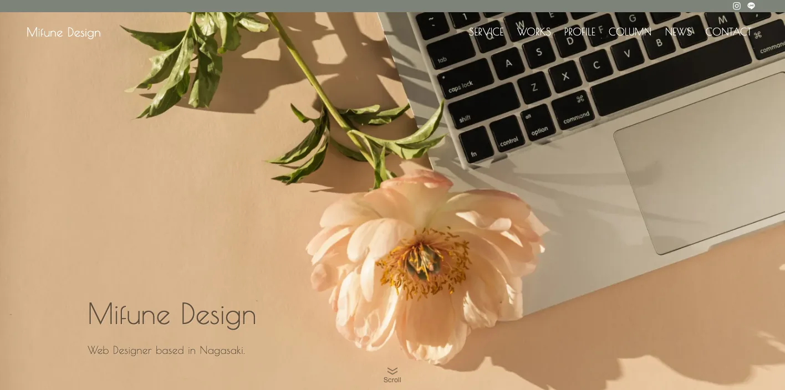
Mifune Designは、長崎を拠点に活動するWebデザイナーです。ホームページ制作、WordPress、LP、リットリンク、印刷物デザインなどを扱い、丁寧なヒアリングから事業の本質を整える姿勢を打ち出しています。
長崎県の店舗、個人事業、観光関連、地域サービスでは、事業者の人柄や背景も判断材料になります。LLMOでは、誰が運営しているのか、何が得意なのか、どんな人に向いているのかを公式サイトで説明することが重要です。
テールワーク
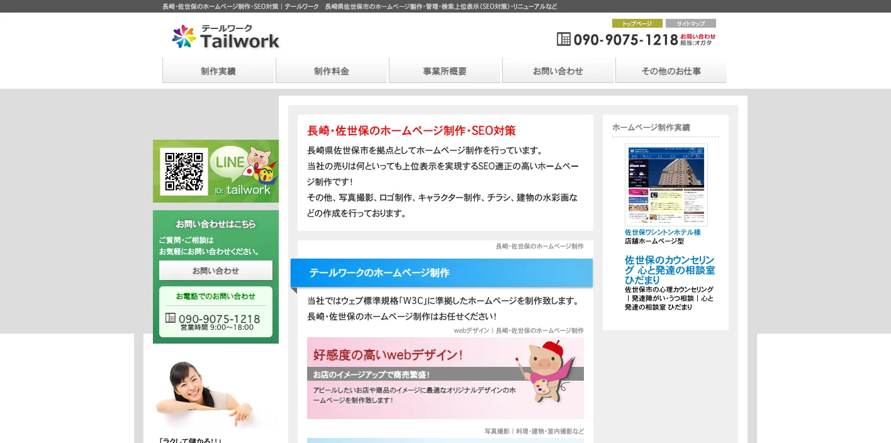
テールワークは、長崎県佐世保市を拠点にホームページ制作とSEO対策を行う制作パートナーです。SEO適性の高いホームページ制作、写真撮影、ロゴ、キャラクター、チラシ制作などを打ち出しています。
佐世保、平戸、松浦、西海方面では、観光、港湾、店舗、飲食、宿泊、BtoBが混ざります。LLMOでは、地域名、アクセス、写真、サービス範囲、予約条件、法人向け情報を整理できるかが大切です。
TYK Studio
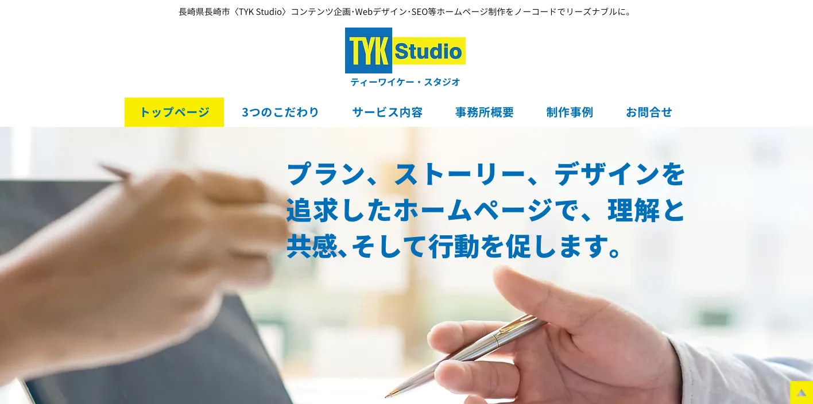
TYK Studioは、長崎市でコンテンツ企画、Webデザイン、SEOなどを行う制作パートナーです。ノーコード制作、ストーリー設計、理解と共感を促すホームページ作りを打ち出しています。
AI検索では、表面的な紹介文だけではなく、誰のどんな課題を解決するのかが読み取れるページが重要です。観光、教育、店舗、士業、地域サービスで、コンテンツの流れから整理したい場合に候補になります。
フロートワークス
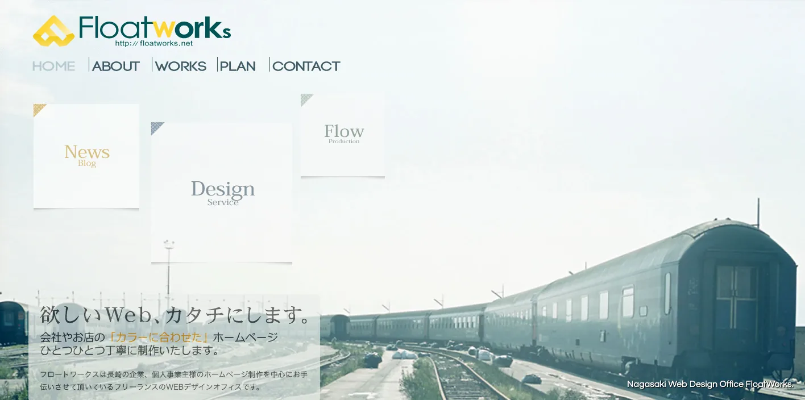
フロートワークスは、長崎市を中心にホームページ制作やDTPデザインを行うWebデザインオフィスです。長崎市、諫早市、大村市、島原市など長崎県エリアの企業や個人事業主向けの制作を案内しています。
小規模事業者のLLMOでは、複雑な施策よりも、公式サイトの基本情報を整えることが先です。所在地、対応エリア、料金、写真、よくある質問、問い合わせ方法を分かりやすく出したい場合に向いています。
株式会社ブロス
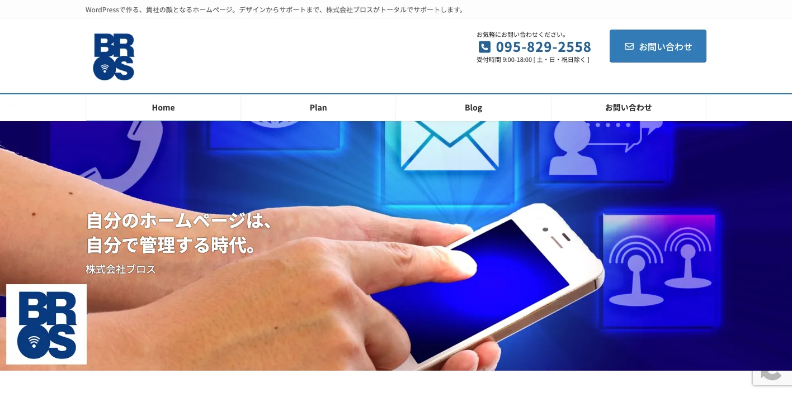
ブロスは、長崎市を拠点にWordPressでのホームページ制作、デザイン、サポートを行う会社です。自分で管理できるホームページを重視しているため、公開後に更新を続けたい企業に候補になります。
LLMOでは、制作後に情報を追加できることが重要です。新着情報、サービスページ、事例、FAQ、採用情報を自社で更新できる状態にしておくと、AI検索に参照される材料を増やしやすくなります。
アイスカプロジェクト
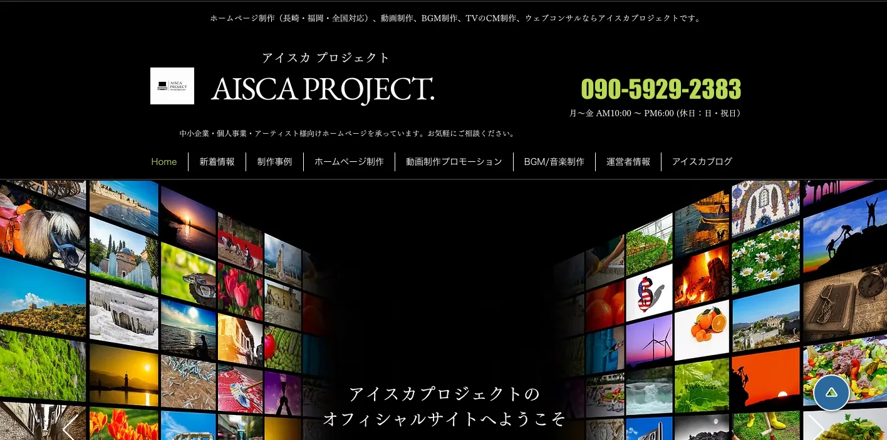
アイスカプロジェクトは、長崎市を拠点にホームページ制作、動画制作、BGM制作、Webコンサルを行う制作パートナーです。長崎、福岡、全国対応を掲げ、中小企業や個人事業者向けのWeb制作を案内しています。
長崎県では、観光、体験、飲食、宿泊、地域産品の魅力を文章だけで伝えきれない場面があります。LLMOでも、動画や写真と、AIが理解できる説明文をセットで整えたい場合に候補になります。
WEB-HABU（株式会社ハブ）
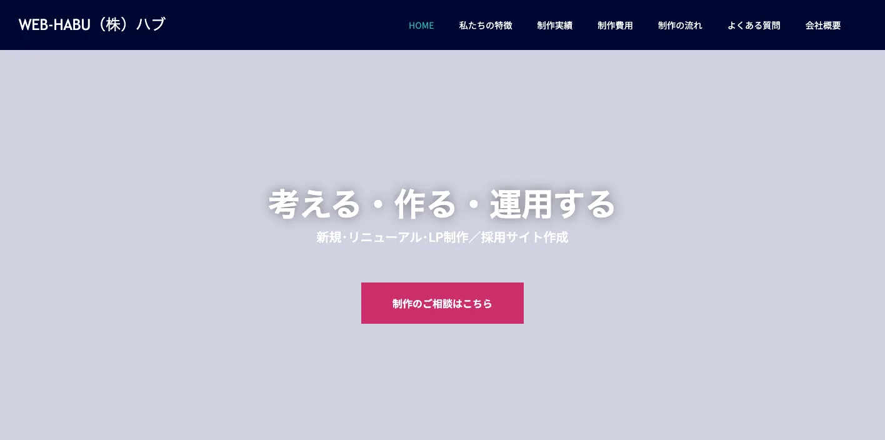
WEB-HABUは、長崎市の企業向けにホームページ制作と管理、Webコンサルティングを行う株式会社ハブのサービスです。長崎市内の企業に絞った制作管理を打ち出し、公開後の運用まで重視しています。
LLMOでは、制作直後の見た目だけでなく、公開後に情報を直し続ける管理体制が必要です。長崎市中心部の企業、士業、医療、教育、地域サービスで、長く使う公式サイトを整えたい場合に候補になります。
10社を比べるときは、最初から「LLMOを丸投げできる会社」を探すよりも、自社に足りないものを分けて考えるほうが失敗しにくくなります。AIに引用される前提の構成設計が弱いなら診断とFAQ設計、写真や現地取材が必要なら県内で動ける制作会社、更新が止まっているなら運用管理を続けられる会社を優先します。
長崎県の場合、同じホームページ制作でも、長崎市の観光店舗、佐世保の事業者、諫早・大村の製造関連、離島の宿泊・水産では、作るべき説明が違います。相談時には「どの地域名で見つかりたいか」「AIにどの質問へ答えてほしいか」「公開後に誰が更新するか」を先に伝えると、見積もりのズレを減らせます。
長崎県のLLMO会社を比較する際のポイント
長崎県でLLMO会社を比較するときは、会社の知名度よりも、自社の商圏に合う情報設計ができるかを見てください。長崎市、佐世保市、諫早市、大村市、島原半島、五島、壱岐、対馬では、AIに聞かれる内容が違います。
比較の順番は、まず地域、次に業種、最後に施策です。「長崎 ホームページ制作」で探すだけでは、自社に必要なのが観光FAQなのか、採用ページ改善なのか、製造業の設備説明なのか、離島向けのアクセス情報なのか分かりません。LLMO会社には、その切り分けから相談できるかを確認してください。
長崎市は観光客向け、地元客向け、法人向けを分ける
長崎市は、観光、医療、教育、士業、飲食、宿泊、採用、BtoBが重なりやすい地域です。LLMOでは、観光客向けの説明と地元客向けの説明を混ぜすぎないことが重要です。
観光ならアクセス、所要時間、予約、雨の日、坂道、路面電車、クルーズ船からの移動。地元向けサービスなら料金、営業時間、駐車場、対応地域。法人向けなら導入実績、契約形態、保守、問い合わせ前の準備を分けて整理しましょう。
佐世保・平戸・松浦は港湾、観光、基地関連の文脈を整理する
佐世保市、平戸市、松浦市、西海市では、造船、港湾、観光、米軍基地関連、飲食、宿泊、海産物が混ざります。県外の人は地名の距離感や移動方法を知らないままAIに質問します。
LLMOでは、アクセス、対応エリア、駐車場、予約、英語対応、団体対応、法人取引、発送条件を公式サイトに出してください。地元の人なら分かる説明ではなく、県外の人にも伝わる言葉が必要です。
諫早・大村は交通、製造、半導体、採用情報が重要になる
諫早市と大村市は、長崎自動車道、長崎空港、新幹線、製造業、半導体関連、物流、住宅、医療福祉が重なる地域です。BtoBや採用では、長崎市や佐世保とは違う比較軸になります。
AIに「長崎県の製造業」「諫早の半導体関連企業」「大村で働ける会社」と聞かれたとき、設備、対応範囲、勤務地、通勤、研修、福利厚生、取引条件が公式サイトにないと説明されにくくなります。
島原半島は温泉、農産品、災害・交通情報を先回りする
島原市、雲仙市、南島原市では、温泉、農産品、観光、歴史、フェリー、災害・防災の文脈が重要です。観光施設や宿泊業では、営業時間や料金だけでなく、交通手段、所要時間、天候、団体対応、季節情報がAIに聞かれます。
農産品や地域産品では、産地、旬、加工方法、購入方法、配送、法人取引、ギフト対応も整理してください。AIが古いまとめ記事だけを見て答えないように、公式サイトの一次情報を厚くする必要があります。
五島・壱岐・対馬は離島特有のアクセスと季節情報を出す
五島、壱岐、対馬は、離島観光、水産、移住、ワーケーション、宿泊、体験、交通が重要です。船や飛行機、欠航、季節、移動時間、レンタカー、宿泊、支払い方法など、県外客が不安に感じる情報を先回りする必要があります。
LLMO会社には、離島のアクセス情報や季節変動を、公式サイトでどう管理するかを確認してください。観光客だけでなく、移住検討者、採用候補者、法人取引先にも分かる情報設計が必要です。
県のDX支援やデジタル補助金をWeb更新体制につなげる
長崎県では、県内中小企業のデジタル活用や人材育成を後押しする支援情報があります。LLMOも、結局はデジタル化の一部です。外注で記事を作って終わりではなく、社内で正しい情報を更新できる体制が必要になります。
問い合わせ内容からFAQを増やす、採用情報を更新する、季節の観光情報を直す、商品情報や事例を追加する、AI回答の変化を見る。この運用がなければ、AI検索に引用される材料は増えません。LLMO会社には、制作物だけでなく運用方法まで確認しましょう。
比較時には、提案書に「ページ制作」「構造化データ」「FAQ追加」「写真・動画」「月次レポート」「修正対応」が分かれているかを見てください。長崎県の事業者は、観光シーズン、学会・イベント、造船・半導体関連の採用、離島航路の案内など、時期によって更新したい情報が変わります。どこまで月額内で直せるかを確認しておくと、公開後に止まりにくくなります。
長崎県のLLMO会社に依頼する費用相場
LLMOの費用は、単純な記事制作費ではありません。AIに引用されやすい情報を作るには、現状調査、競合調査、構造化データ、FAQ、サービスページ改善、記事制作、更新運用、効果測定が必要です。長崎県の場合は、観光、造船、港湾、半導体、食品、水産、離島、医療福祉、採用で必要な作業量が変わります。
予算を組むときは、初期費用と月額費用を分けて考えると分かりやすいです。初期費用は、AI検索での見え方調査、既存サイトの問題整理、重要ページの修正、FAQや構造化データの追加に使います。月額費用は、AI回答の変化確認、事例追加、季節情報の更新、採用情報の修正、問い合わせ内容からのFAQ追加に使います。
長崎県では、県内だけの商圏で完結する事業と、九州全体・全国・海外から比較される事業が混ざります。前者は基本ページとFAQの整備から始めれば十分なことが多く、後者は競合調査、比較ページ、導入事例、交通・配送・予約条件、多言語対応まで必要になることがあります。
| 依頼内容 | 費用目安 | 長崎県での考え方 |
|---|---|---|
| 初期診断・方針設計 | 5万〜20万円 | AI検索で自社名、サービス名、地域名がどう説明されるかを確認する。長崎市、佐世保、諫早、大村、島原、五島など商圏別に見る。 |
| 既存サイト改善 | 20万〜80万円 | 会社概要、サービス、料金、FAQ、事例、採用、問い合わせ導線を整える。観光や離島はアクセス情報も重視する。 |
| 記事・FAQ制作 | 1本5万〜20万円 | 観光、港湾、製造、半導体、水産、医療福祉、教育、店舗など、AIに聞かれる質問ごとに作る。 |
| 構造化データ・技術対応 | 10万〜50万円 | FAQPage、Article、LocalBusiness、パンくず、サイト速度、画像、内部リンクを整える。CMSやサーバー条件で費用が変わる。 |
| 月額運用 | 5万〜30万円/月 | AI回答の変化、検索流入、問い合わせ、FAQ追加、事例更新を継続する。観光や採用は季節更新も必要。 |
小規模店舗は基本情報と写真から始める
飲食店、治療院、美容、士業、教室、宿泊施設などは、いきなり高額なLLMO運用を始めるより、公式サイトの基本情報を整えるほうが先です。営業時間、所在地、駐車場、予約方法、料金、写真、よくある質問、対応できないことを明記するだけでも、AIが説明しやすくなります。
長崎市内の店舗なら交通手段や駐車場、坂道、観光客との混在を説明し、佐世保や島原、離島ならアクセスや営業時間の季節差を厚くしましょう。
観光業は季節更新とアクセス情報を見込む
長崎県の観光業では、1回作って終わりのページでは足りません。長崎市、佐世保、平戸、雲仙、島原、五島、壱岐、対馬では、季節、交通、営業時間、混雑、予約条件、天候、船や飛行機の影響が変わります。
観光系のLLMOでは、月額運用でFAQやイベント情報を更新する費用を見込んだほうが安全です。外国人観光客を意識する場合は、多言語ページや英語FAQの整備も検討してください。
製造・港湾・半導体関連は法人情報と採用情報を分ける
佐世保、諫早、大村、長崎市周辺の製造、港湾、造船、半導体関連では、取引先向けの説明と採用候補者向けの説明を分けることが大切です。法人向けには設備、対応範囲、納期、保守、実績。採用向けには勤務地、職種、働き方、研修、選考フローが必要です。
この領域では、専門用語をそのまま並べるよりも、AIにも人にも分かる言葉で事業範囲を説明する必要があります。工場、港、研究開発、保守、検査、物流など、何をどこまで対応できるのかをページで分けましょう。
離島ビジネスは交通と配送の説明に費用をかける
五島、壱岐、対馬では、サービス内容だけでなく、行き方、配送、予約、天候、支払い、キャンセル、現地対応の説明が重要です。AIが回答するときに不安を解消できる情報が公式サイトにないと、別サイトや古い口コミに頼られやすくなります。
LLMOの費用対効果は、記事本数よりも「正しい情報を更新し続けられるか」で決まります。会社選びでは、見積もりの安さだけでなく、運用担当者への引き継ぎ、更新マニュアル、効果測定まで含まれているかを確認してください。
見積もりを受け取ったら、総額だけで判断しないでください。初期制作費が安くても、FAQ追加、写真差し替え、構造化データ修正、問い合わせ導線の改善が別料金だと、運用開始後に必要な更新が止まります。逆に初期費用が高くても、調査、設計、取材、公開後の改善まで含まれるなら、長崎県のように地域差が大きい商圏では合理的な場合があります。
長崎県のLLMO会社に関するよくある質問
長崎県内の会社に依頼したほうがいいですか？
対面取材、写真撮影、観光地や店舗の現地確認、地域の商慣習を拾いたい場合は、県内会社に依頼する価値があります。一方で、AI検索の引用状況調査、構造化データ、FAQ設計、コンテンツ改善は、県外のLLMO専門会社と組み合わせても問題ありません。
長崎市と佐世保・諫早・離島ではLLMOの進め方は変わりますか？
変わります。長崎市は観光、医療、教育、店舗、採用、BtoBが混ざりやすく、佐世保は港湾・造船・観光、諫早・大村は製造・交通・採用、五島・壱岐・対馬は離島アクセスと水産・観光の情報が重要になりやすいです。地域ごとにAIに聞かれる質問を分けてください。
観光業や飲食店でもLLMOは必要ですか？
必要です。長崎市、佐世保、平戸、雲仙、島原、五島、壱岐、対馬などでは、行き方、所要時間、営業時間、予約、駐車場、混雑、雨の日、多言語対応などがAIに聞かれます。公式サイトに一次情報を置くほど、AI回答の材料になりやすくなります。
水産や地域産品でもLLMOは効果がありますか？
あります。長崎県では、水産物、かんころ餅、カステラ、ちゃんぽん、皿うどん、びわ、島原手延そうめん、五島うどんなど、地域性の高い情報を探す消費者や取引先がいます。由来、製法、購入方法、法人取引、発送、ギフト対応、事例を整理すると、AIにも人にも伝わりやすくなります。
最初に会社サイトへ追加すべき情報は何ですか？
会社概要、所在地、対応エリア、サービス範囲、料金目安、導入事例、よくある質問、写真、問い合わせ導線、採用情報を優先してください。長崎市、佐世保市、諫早市、大村市、島原市、五島市、壱岐市、対馬市など、実際に対応する地域名も自然に明記しましょう。
長崎県のDX支援や補助金情報も確認すべきですか？
確認したほうがいいです。長崎県では、県内中小企業のデジタル活用や人材育成を後押しする支援情報があります。LLMOをWebだけの話にせず、社内更新体制、生成AI活用、業務改善、データ活用まで含める場合に役立ちます。
長崎県でLLMO会社を選ぶなら、観光・港湾・製造・離島を分けましょう
長崎県でLLMO会社を選ぶときは、県内を一つの商圏として扱わないことが大切です。長崎市は観光客向けと地元客向け、佐世保は港湾・造船・観光、諫早・大村は製造・半導体・採用、島原半島は温泉・農産品・交通、五島・壱岐・対馬は離島アクセスと水産・観光が重要になります。
最初にやるべきことは、自社がAIにどう説明されたいかを決めることです。会社名で聞かれたとき、地域名で探されたとき、比較されたとき、料金を聞かれたとき、採用候補者が調べたときに、公式サイトが答えを持っている状態を作りましょう。
特に長崎県では、県外からの見られ方を無視できません。観光施設は九州旅行の候補として比較され、港湾・製造関連は九州全体の取引先候補として見られ、離島の事業者はアクセスや配送条件まで確認されます。県内向けの言葉だけでなく、県外の人にも通じる説明、アクセス、取引条件、相談前に必要な情報を置いてください。
依頼先を決めるときは、見積書の中身も確認しましょう。「記事制作一式」だけではなく、どのページを直すのか、誰に取材するのか、公開後に何を測るのか、何カ月後にどの情報を追加するのかまで書かれているほうが安全です。LLMOは短距離走ではなく、公式情報を積み上げる運用です。
長崎県のLLMOは、地域名、業種、観光、港湾、製造、離島、採用、DXを分けて設計するほど精度が上がります。会社選びでは、制作実績の見た目だけでなく、取材力、構造化データ、FAQ設計、CMS運用、効果測定、社内引き継ぎまで確認してください。迷う場合は、小さな診断から始めて、重要ページを順番に直す進め方が安全です。